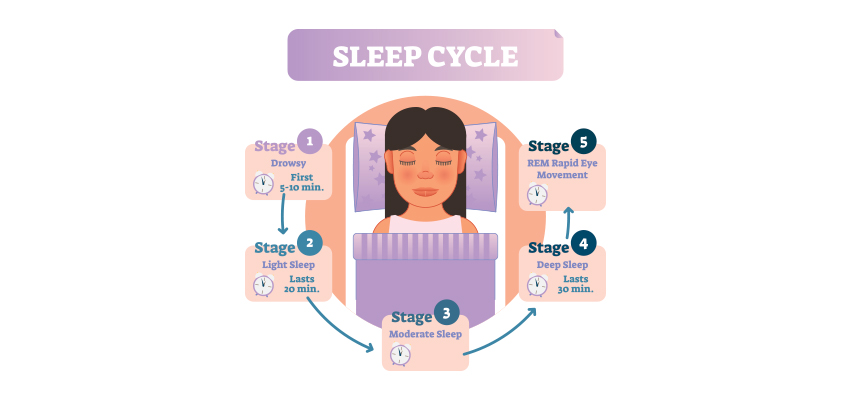
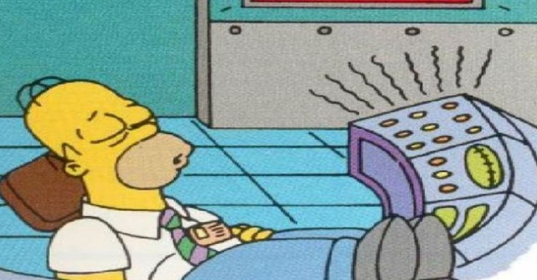
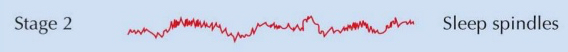
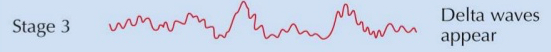
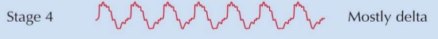
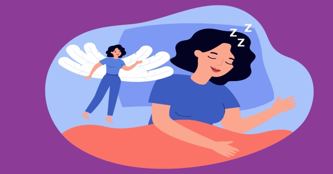

What is sleep?
Sleep is an essential state that allows your body and mind to rest and restore energy. Sleep affects your mental and physical health. Lack of sleep may lead to many negative health impacts.
Stages of sleep
Stage 1
This is where you drift in and out of sleep and can be awoken easily. At this stage, the movement of your eyes and muscle activity is very slow. Many might experience sudden muscle contractions called hypnic myoclonia or hypnic jerks, often lead up to a sensation of starting to fall.
Stage 2
This is where eye movement stops and brain waves slows down.
Stage 3
Delta waves(extremely slow brain waves) starts to appear between smaller and faster waves.
Stage 4
Delta waves are produced almost exclusively at this stage. There is no eye movement or muscle activity at this stage.
Stage 5
This is where your body switches into Rapid Eye Movement (REM) sleep. During this stage, brain activity increases, breathing becomes more rapid,irregular, and shallow, eyes jerk rapidly in various directions, and limb muscles become temporarily paralysed during sleep. This is where you will experience intense dreams.
Usually takes about 1.5h of sleep to reach this stage.